Da una pista de lo que el usuario debe introducir en ese campo. Al hacer click en el campo se borra automáticamente dando lugar a lo que escriba el usuario, y si el campo se vacía, vuelve a aparecer. No es editable por css y si se necesita darle estilos se necesitará recurrir a otras formas.
Vista navegador del atributo fieldset=""
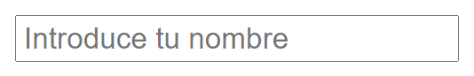
Código de ejemplo del atributo placeholder=""fieldset=""
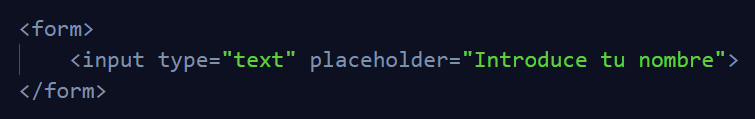
Required
Es un atributo booleano y se utiliza para decirle al usuario que ese campo es requerido. Cuando un campo requerido no se completa y se intenta enviar el fomulario, los navegadores muestran un mensaje en forma de popup diciendo que ese campo es obligatorio.
Vista navegador del atributo required
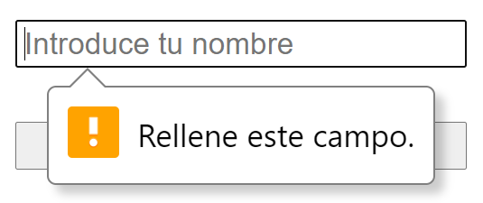
Readonly
Este atributo booleano como su nombre indica, hace que un input del formulario sea solo de lectura, no es muy común que se use, pero si en algún momento lo necesitas pues ahí está, por lo general tiene un value="" asignado por defecto. A nivel de apariencia no cambia nada, pero si intentamos escribir en el, no podremos. Es importante recordar, que todos los atributos de los formularios en html, son accesibles desde el inspector del navegador, eso quiere decir que el usuario puede ir al inspector y desactivar estos atributos o editarlos, son una primera capa de seguridad pero no es la mejor, se valida por javascript e incluso desde el servidor.
Disabled
Disabled es un atributo booleano que lo que hace es deshabilitar un campo, esto viene bien cuando necesitas que e nfunción de lo que ponga el usuario se necesite habilitar un campo u otro. Igual que pasa con el atributo type="hidden" en el ejemplo de los inputs de tipo texto. A nivel visual se oscurece un poco el fondo para señalar que ese campo está desactivado. Una diferencia más que tiene con readonly es que si el campo está deshabilitado, cuando se envíe el formulario, ese campo no se envía, contrario a readonly que sí se envía.
Atributo disabled
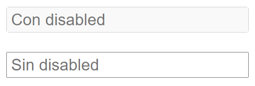
Autofocus
Este atributo booleano, lo que hace es cuando se carga la página, dejar el cursor listo para escribir en el campo que tenga este atributo. Si hay más de un campo con este atributo, el que se toma en cuenta es el primer campo que lo tenga asignado.
Min - Max
Son atributos para los inputs de tipo number y como su mismo nombre indica, establecen un mínimo y un máximo posible a ingresar. Si usamos las flechas que tiene un input de tipo number, solo se moverá en el rango que establezca estos dos atributos, y si escribimos los valores nosotros por medio del teclado numérico, nos permitirá escribir el número que sea, pero al quierer enviar el formulario saltará un mensaje alertando que el valor que se ingresó no es correcto. Son atributos opcionales los dos, y tampoco es necesario que estén los dos a la vez, puede estar solo min="" o solo max="".
Atributos min="" max=""
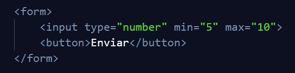
Atributos min="" max="" alerta de menor que
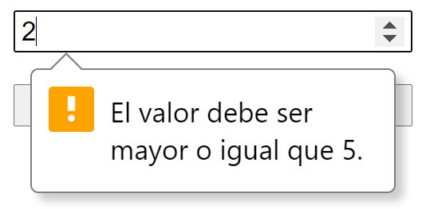
Atributos min="" max="" alerta de mayor que
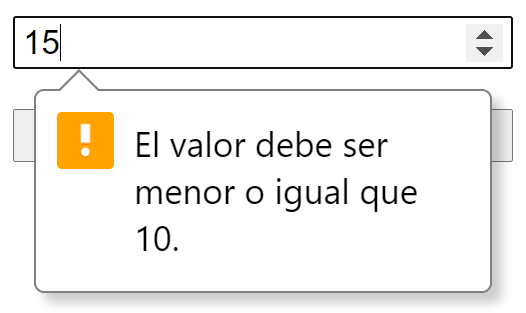
minlenght - maxlenght
Al igual min="" y max="", sirven para establecer un mínimo y un máximo de caracteres pero en campos de texto. Tampoco es obligatorio que estén y pueden perfectamente estar uno o el otro en función de lo que se necesite. Si está el atributo maxlenght="" nos permitirá escribir hasta el máximo de caracteres permitidos. Pero si escribirmos caracteres de menos, nos aparecerá una alerta avisando que aumentemos el número de caracteres.
Atributos minlenght="" maxlenght="" código de ejemplo
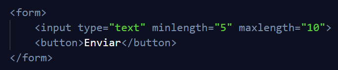
Atributos minlenght="" maxlenght="" alerta de menor que
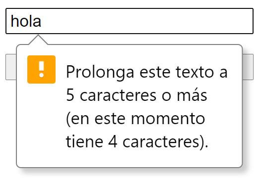
Selected
Es un atributo booleano similar a el atributo checked en los inputs de tipo radio o los checkbox, pero para la etiqueta select. por defecto si no establecemos este atributo, la opción que estaría seleccionada por defecto es el primer elemento option que contenga la etiqueta selcet, pero si establecemos este atributo en otra opción, esta última es la que será seleccionada por defecto.
Atributo no definido
Sin definir atributo selected=""
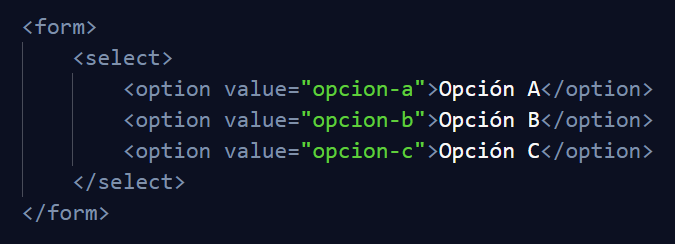
Sin definir atributo selected="" vista navegador
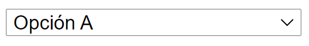
Atributo definido
Definido el atributo selected=""
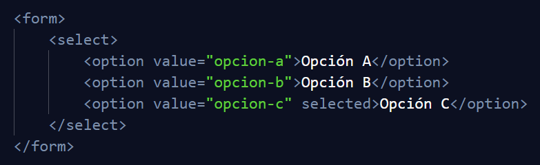
vista navegador atributo selected="" definido
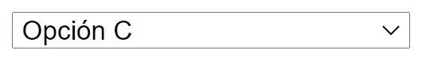